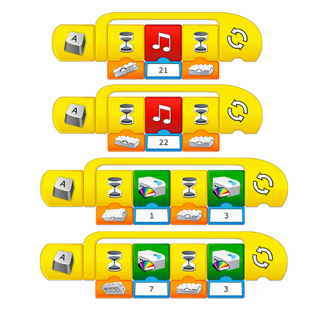

编写一个使用信号发送信息的程序
该程序应当可以使学生了解操纵杆的行为。留出一些时间，让学生熟悉操纵杆的动作，并进行探究和修改。
编程帮助
使用倾斜传感器的其他模式
可以向此程序添加其他程序链，来激活倾斜传感器的其他模式。

使用程序库
浏览程序库，查看更多有关倾斜传感器使用方法的示例。
该程序应当可以使学生了解操纵杆的行为。留出一些时间，让学生熟悉操纵杆的动作，并进行探究和修改。
可以向此程序添加其他程序链，来激活倾斜传感器的其他模式。

浏览程序库，查看更多有关倾斜传感器使用方法的示例。